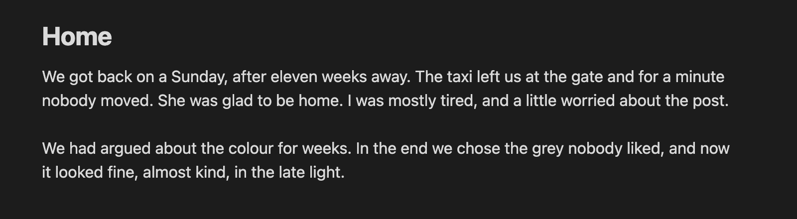
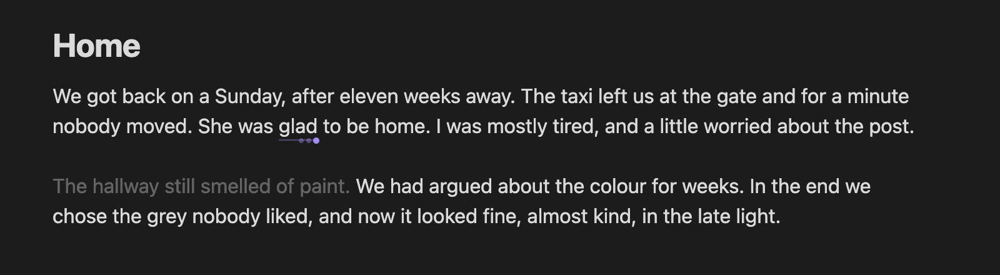

Versions, in place
Press ⌘J on a word and type a version. Hover the word and press the arrow keys to read each one in the sentence. Whatever is showing is the note. Press ⌘J again for the sentence, again for the paragraph.
Settle on the right way to say something.
Keep several versions of a word, sentence or paragraph in the note and read each one in place. Fade text instead of deleting it. Ask AI for options, never for prose. Vikalp is Hindi for "alternative".


Press ⌘J on a word and type a version. Hover the word and press the arrow keys to read each one in the sentence. Whatever is showing is the note. Press ⌘J again for the sentence, again for the paragraph.
Press ⌘⇧J and options stream in, marked with a small robot. Your text doesn't change until you choose one. AI never writes into your note. It can add versions, mark text or suggest cutting your own words, and nothing runs until you click.
Select text and press ⌘. then G. It fades, stays in the note and leaves the word count. Revive it later, or copy the note without it.
⌘. then S moves a passage to Overflow, a side panel kept with the note. Drag it back when it fits.
⌘. then L runs rules for hedging, wordiness, passive voice, repetition and AI-sounding phrases. It never runs on its own. Edit the rules or add your own.
AI passes mark typos, weak sentences, off-tone words and hedges. Trim levels strike through what a model would cut, from 10% to 50%. You keep or cut each one.

⌘. then R hides every marker and panel. Esc brings them back.
The README covers the rest: every command, the linter rules, and what the AI features send and where.